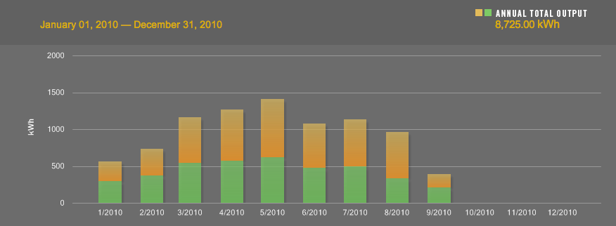
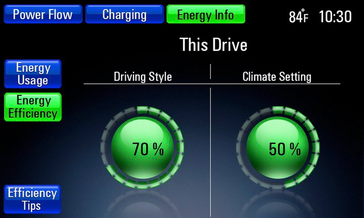
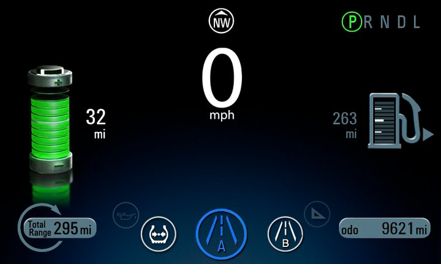
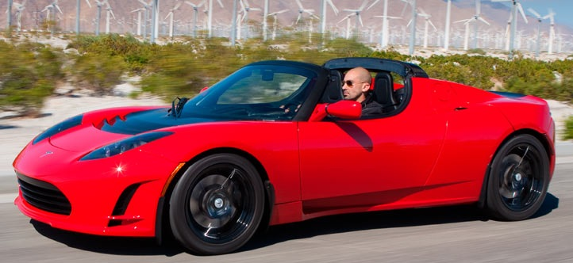
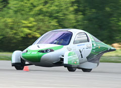
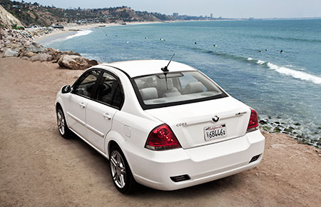
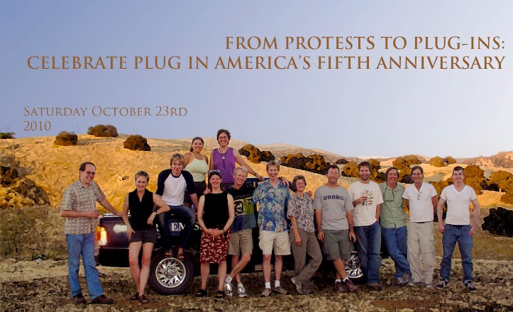
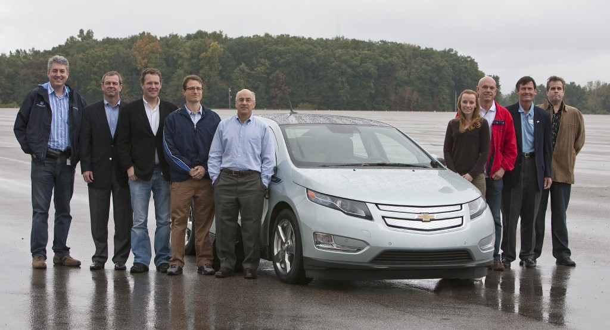

Dodger Stadium
September 09, 2010
I'm not a baseball fan. I've lived in Los Angeles for over a decade and I still haven't made it to Dodger Stadium, which is a little sad for my boys because their shouldn't really have their life experiences narrowed by their father's inability to enjoy spectator sports. But there it is. I haven't even been in the parking lot. Until last April 12.
I got a call from an EV enthusiast, who sometimes helped GM with their EV evangelism. She said that there were a very few regular people (not journalists) being invited to try out the Volt, was I interested in doing a short test drive. Well, since I had been reading about the car for almost two years, yes. Definitely yes.
Read more…
Fame
September 10, 2010
Along with the little video, I was quote in this blog post by Chelsea Sexton (I'm all the way in the last paragraph). When my wife drove her EV1, Chelsea was the EV Specialist who took care of us. (She arranged the test drive and everything.) GM should hire Chelsea back, but they can't because she's huge in the EV community and has her own wikipedia page and all that. The best they can hope for is some wisdom and kind words. (So far, I think they've been getting that.)
I see Chelsea at EV events (the last one was a huge parade in Santa Monica of over a hundred electric vehicles). I can't remember where she lives, but if we both had Volts I think we could meet for coffee somewhere within range.
Innovation
September 11, 2010
I will struggle to keep this blog from becoming political, because I admit that I am woefully under-informed and I certainly don't want the job of running the country or making practically any of the decisions that need to be made by the people in power. Still, it made me sad to hear that GE was shutting their last incandescent bulb factory.
Not because I think we still need them, surely there are better ways to light things up without generating so much heat (which, when you are trying to light something, just represents wasted energy). But part of the story is that the government regulations are basically pushing the incandescent manufacturing out of business without providing the necessary support or incentives to replace the manufacturing with something else.
Read more…
Possible Cars to Drive
September 12, 2010
I wrote a page listing the cars that I would consider for our next purchase. I realize that I have left off the plug-in Prius that might be coming from Toyota. And I know that there are a bunch of after-market options that will add a battery pack to our current Prius and force it to stay purely electric for longer. Those seem expensive for something that voids your warranty, so I have steered clear of them.
There are also outfits that do conversions and maybe after my kids are out of the house I could see taking something cool like a 1970 Jaguar XKE and turning it into an all electric car with a 100 mile range. But I know that the first time I was stuck somewhere I'd be very bummed out about the hobbyist aspect of that decision.
Read more…
Gorgeous Technology
September 13, 2010
Back in 2002 GM unveiled the Hy-Wire hydrogen-powered car. It was never going to go into production, but it was very interesting for a number of reasons. The first was that it represented a new way of thinking about manufacturing cars. The chassis of the car was like a thick (11") skateboard. The batteries (and hydrogen fuel cell) and *all* of the mechanics of the car were in this thick piece. The passenger compartment was then bolted on and a single electric/electronic connection was made between they two. The assembly of that last piece was described as taken thirty minutes.
So the skateboards would be rolled off a single assembly line and the passenger compartments could vary widely, from luxury two seaters to minivans and pickup trucks.
Read more…
Solar-powered Car
September 14, 2010

I got a call yesterday from consultants hired by the State of California. As part of the California Solar Initiative they want to come install a monitor on our solar system, so they can see how much power is being generated. It's on a volunteer basis. I said it was fine. They are contacting another branch of their consulting group to do the actual legwork.
Read more…
Will you carry stale gas in your Volt?
September 15, 2010
Here is an excellent, short, technical article on the fuel system for the Chevy Volt. (There's not a chance I can to a post-a-day without a Volt to drive unless I am occasionally pushing links to outside material.)
It is also a reminder that there is a vast amount of engineering behind even the smallest considerations in the Volt. That's true of all cars, but the Volt represents a lot of new thinking.
"Luuuuuuucy! You forgot to plug in the car."
September 16, 2010
True story. In the first month that we had our GM EV1 we were excited to show it to my wife's old boss, who was enough of a car nut to have a fancy Porsche and a four car garage. He's not Jay Leno, but he had heard about the EV1 and wanted to see it.
The original EV1 had a sixty mile range. Plenty for the sort of back-and-forth to the studio that my wife was doing at the time. She had already done that once, though, and then I had driven the car a little, and before our dinner up at Barry's neither of us had thought to plug in the car.
Read more…
Touring Detroit with a Jackass
September 17, 2010
No discussion of the Chevy Volt is complete without a little mention of the city of Detroit. GM has a bunch of manufacturing plants but will build the Volt right there in Motor City.
Read more…
The Screens
September 18, 2010

This will be the first of a series of posts.
Read more…
Tell Me More
September 19, 2010

Here is the screen directly in front of your steering wheel. That's where you glance all the time. It's great that with one glance you see the fill-state of the battery and the fuel tank. And a little longer look tells you what the range is for each and what the total is. I bet that could be better represented by a vertical bar on the left with color-coding for fuel (the majority of the bar) and the battery (top portion of the range bar, since it gets used first). Maybe some people would want to keep it zoomed on the battery portion most of the time.
Read more…
Crunchgear Review
September 20, 2010
It's not really a review, since they didn't get to drive it enough, but it is so important that a gadget and technology blog is hyped about the Volt. They wrote about it in this article.
One of the first comments in the comment section is about how the Chevy logo is ugly. I wonder when the last time they redesign Chevy was. Maybe it's time.
High Profile Tesla
September 21, 2010

Keep an eye on Wired.com My copy of the magazine arrived in the mail and the cover story about Elon Musk and the Tesla Company is fascinating. He came so close to having the whole thing collapsing, but Daimler and Toyoda (the CEO of Toyota) saved him in the end.
Read more…
Disappointment
September 22, 2010

I don't know. I think that I have to write and get my deposit back from Aptera. Trying to read between the lines it feels like the company was pinning its hopes on winning the X-Prize, a competition for high-efficiency cars. They didn't win.
Read more…
Leaves on the Wind
September 23, 2010

Lance Armstrong has tweeted about getting delivery of the first Leaf in the United States. And now I just received this email:
We are thrilled with the overwhelming enthusiasm people like you have shown for the 100% electric Nissan LEAF™. To date, 20,000 people have already reserved a LEAF - a number that has exceeded our expectations.
Read more…
Stay Tuned!
September 23, 2010
Okay, this could be exciting. Since I have a reservation for the Nissan Leaf (and apparently it is a priority reservation, probably since I am in Southern California and I am generally a squeaky wheel), I was invited to test drive the Leaf at the AltCar Expo on October 1.
Read more…
Rolling with the Rays
September 24, 2010
Now I am just joining things left and right. I signed up on SolarChargedDriving. I saw one of their blog posts about how the Leaf people and the Volt people should really share a little love and realize they are on the same team. In a larger sense.
GM, of course, gets some of the blame here since their marketing department seems to think that they need to bash the pure-electric cars in order to sell their new car. That's too bad (and wrong). I appreciate the effort to try to keep things civil and reduce the bashing of one car over another.
Read more…
Spare Batteries
September 24, 2010
On of the things people often mentioned in disparaging the EV1 when we were driving it, was that the batteries were a real landfill hazard. Of course, the original car had lead-acid batteries, which just meant it was like another bunch of cars' worth of batteries. And newer EVs essentially have laptop batteries, which people get rid of all the time.
But the truth is that it is just something that should be thought about. In order to get the best possible performance and the longest life out of the batteries, the Volt only uses half their capacity. The pack can take a 16kWh charge and the forty mile range depletes them by only 8kWh.
Read more…
Coda to the Coda?
September 25, 2010

Ah, the price-sensitive American. What I had always hoped, when I first started driving our EV1, was that people could see the real price of their cars and their impact over time. The nation had $2 per gallon gas at that point, but in order to protect our supplies we supported dictators and brutal regimes and made a big mess in the Middle East. Every time I read a blog post from the Volt team I always see at least one comment from someone saying, "Sounds like a great car, but the PRICE!"
Read more…
Plug In America
September 26, 2010

Here's a good looking group of folks... They have been working on plug in vehicles for the country for the past five years. That means they didn't even get in on the good ole days of the EV1 and EV+. Well, some of them did, but the official group didn't.
Read more…
What's the Deal, Dealer?
September 27, 2010
So here is the state of things at a Chevy dealership in the third week of September 2010. I walked in to see what sort of information they would have, what the sales pitch might be, how hard it would be to get one on order, the usual things people are wondering about.
Bad news.
Read more…
Out of Here
September 27, 2010
By the time you are able to read this, I will be on a jet winging my way to Detroit. I was invited by General Motors, but that's all I can tell you. We'll see if that changes by the time I land or if I am going to have to give you hints for the next month or so instead.
Read more…
Board Member Summers, Present
September 28, 2010

General Motors selected me to join the group of civilians telling them about the experience acquiring and driving the Volt. Acquiring is key because it includes the installation of the charger, a major hurdle in the purchase of the car. That’s pretty kick ass, right?
Read more…
Fuel On Board
September 29, 2010
This is my first Internet news scoop. As far as I (and Google) know, this information is not yet on the Internet.
My hope is that I will only burn gas in my Volt once a month or so. We'll see how that goes once I start driving one. (Supposedly that will be October 24th or a little after.) That means that I will be carrying gas around with me for no reason. In fact, I posted about this earlier, having read a very interesting article about the fuel system.
Read more…
The Robots Make a Volt
September 29, 2010
[vimeo 15415324]
I haven't written up my exciting trip to Detroit. I'm behind. But I had to share this anyway, my video of nine robots doing the initial welds on the body. You are watching 289 welds being made in 49 seconds. I visited GM's Detroit-Hamtramck manufacturing plant on Tuesday, September 28, 2010.
Volt Tweet
September 30, 2010
Okay, I have joined the Twitter revolution. I'm on there as Voltaday.
I suspect that will get a little more active once I am actually driving the car. I think the OnStar software will automatically tweet my mpg every hundred miles. (That's a joke, son.)
I am almost recovered from my trip to Detroit.
Next →
{kind=link}
{kind=link}
{kind=link}
{kind=link}
{kind=link}
{kind=link}
{kind=link}
{kind=link}
{kind=link}
{kind=link}